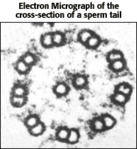
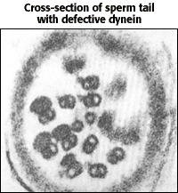

The Biology Project > Cell Biology > Cytoskeleton > Tutorial
Cytoskeleton Tutorial
External cell movement
Cellular movement|
Cellular movement is accomplished by cilia and flagella.
Cilia are hair-like structures that can beat in synchrony causing the movement of unicellular paramecium. Cilia are also found in specialize linings in eukaryotes. For example, cilia sweep fluids past stationary cells in the lining of trachea and tubes of female oviduct. Flagella are whip-like appendages that undulate to move cells. They are longer than cilia, but have similar internal structures made of microtubules. Prokaryotic and eukaryotic flagella differ greatly. Both flagella and cilia have a 9 + 2 arrangement of microtubules. This arrangement refers to the 9 fused pairs of microtubules on the outside of a cylinder, and the 2 unfused microtubules in the center. Dynein "arms" attached to the microtubules serve as the molecular motors. Defective dynein arms cause male infertility and also lead to respiratory tract and sinus problems. Below are two cross-sections of sperm tails (flagella).  |
The Biology
Project
Department of Biochemistry and Molecular Biophysics
University of Arizona
September 1997
Revised: August 2004
Contact the Development Team
Department of Biochemistry and Molecular Biophysics
University of Arizona
September 1997
Revised: August 2004
Contact the Development Team
http://biology.arizona.edu
All contents copyright © 1997 - 2004. All rights reserved.